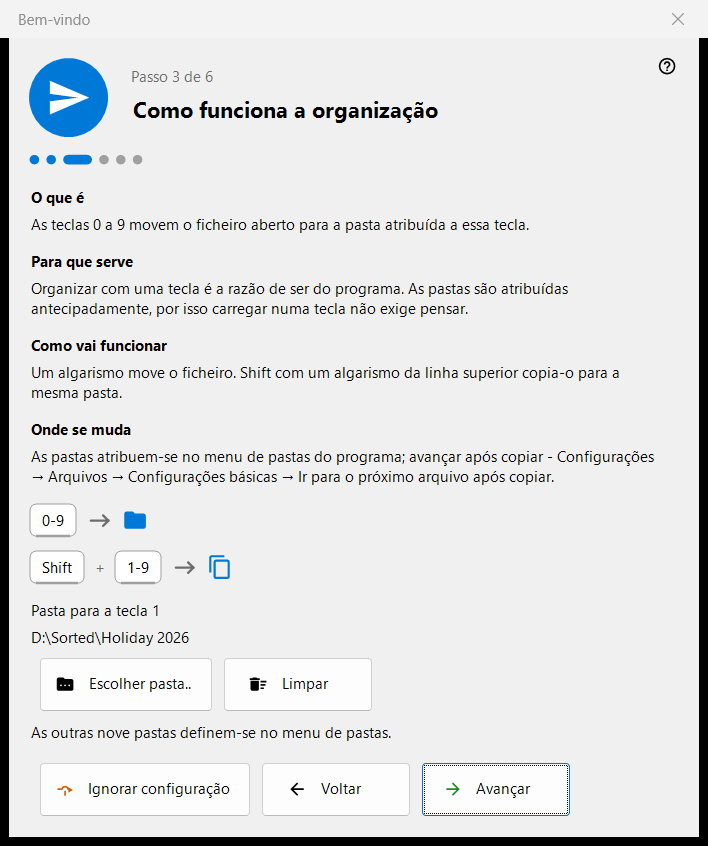
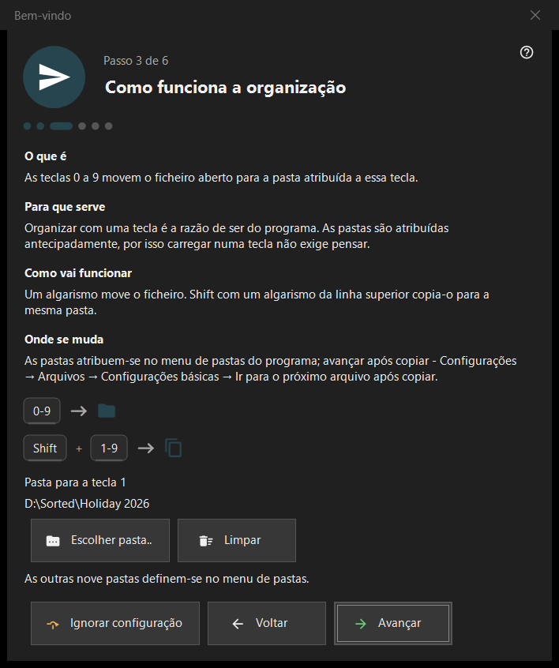

Bem-vindo
Bem-vindo
Finalidade
Os passos de boas-vindas configuram o básico em poucos minutos: idioma, aparência, a pasta da tecla 1, a exclusão e as associações de arquivos. Eles são abertos na primeira inicialização, pelo botão «Configuração inicial» na tela vazia do visualizador e por «Mostrar novamente os passos de boas-vindas» na página «Geral» das Configurações. Existem apenas na versão de 64 bits.


Nesta ordem
- Escolha o idioma.
- Escolha o esquema de fundo e a ação da roda.
- Escolha a pasta da tecla 1.
- Leia como funciona a exclusão.
- Defina as associações de arquivos.
- Confira o resumo e pressione «Concluir». «Avançar» vai para o passo seguinte, «Voltar» retorna e «Ignorar configuração» pula para o último passo.
Os elementos
Idioma da interface
A janela muda de idioma imediatamente, como pré-visualização; o visualizador só o adota com «Avançar». Se a janela for fechada sem isso, o idioma do visualizador é restaurado.
Aparência
Escolha o esquema de fundo da área da imagem (Por canto, Preto, Branco, Por borda, Pelo topo, Pela base) e a ação da roda: ou ela faz zoom no cursor e as setas navegam pelos arquivos, ou ela navega pelos arquivos e Ctrl+roda faz zoom. Ambas as escolhas podem ser alteradas depois na página «Imagens» das Configurações.
Como funciona a organização
Os dígitos 0-9 movem o arquivo atual para uma pasta; Shift mais um dígito da fileira superior o copia. A pasta da tecla 1 é escolhida com «Escolher pasta..»; as outras nove são definidas depois na página «Destinos» das Configurações. Se uma pasta tiver desaparecido, o passo avisa: «Esta pasta já não está disponível. Escolha outra.»
Exclusão segura
Mostra como funcionam Del (para a Lixeira) e Shift+Del (definitiva). As opções de exclusão ficam na página «Arquivos» das Configurações.
Abrir imagens aqui
Permite que este programa abra imagens e vídeos a partir do Explorer. O passo aparece apenas quando o programa não está instalado como pacote da Microsoft Store; vale para a sua conta de usuário e não exige direitos de administrador.
Tudo pronto
O resumo lista cada configuração, o seu valor e onde alterá-la. Se houver componentes de servidor instalados neste PC, o bloco «Servidores neste PC» mostra cada um com o seu status e o botão «Abrir o gerenciador»; se nenhum estiver instalado, o bloco fica oculto.
Partes de um passo
Cada passo tem quatro partes: «O que é», «Para que serve», «Como vai funcionar» e «Onde se muda».